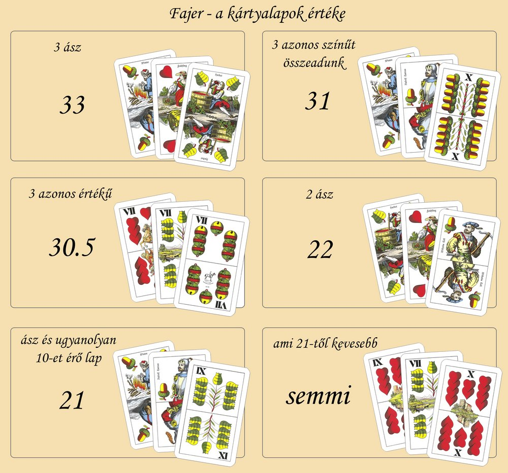

A játékban a 3 lapunk együtt kell értékelni.
Ha 3 egyforma figurás lapunk van, az 30,5-öt (”harminc és fél”) ér. A harminc és félnek van sorrendje: 7,8,9,10, alsó, felső, király. Így ha az egyik játékosnak három db nyolcas lapból van harminc és fele, a másiknak pedig 10-esekből, akkor a 10-esekből összerakott 30,5 jobb és ő nyer. A fajerban a három ász a legjobb, ami nem harminc és fél hanem 33.
A játékban 2 egyforma színű lap csak akkor ér valamit ha az egyik legalább ász és van mellette az ásszal egyforma színű 10-et érő lap. Például zöld ász, zöld 10-es és makk alsó. Ez így 21 (a két zöld lap összeadva), ami a legkevesebb a játékban. A következő legkevesebb a 22 ami 2 bármilyen ászból áll.
Ha ezeken kívül másod van, pl. 3 különböző színű lap akkor azok értéke ”semmi” = 0.
A játékban utánad mindig a tőled jobbra ülő játékos következik.
cserélni 3 lapot is lehet ha a közös lapok érnek legalább 21- et. A képen 30.5-öt ér a 3 db hetes, ezért cserélhető a kézben lévő három lapra.
A soron következő játékos a következőt teheti: cserél, passzol vagy mehetet mond. Cserélni tetszőlegesen cserélhet 1 db lapot a saját lapjaiból a közös lapok valamelyikével. Vagy ha a közös 3 lap ér legalább 21-et, akkor mind a 3 közös lapot kicserélheti a saját 3 lapjára. Ezt úgy hívják, hogy ”felveszi” a lapokat. A mehet bemondása azt jelenti, hogy nem cserél és a tőle jobbra ülő játékos következik. A passz azt jelenti, hogy a játékos ”kiteríti” az asztalra a 3 lapját, így megmutatja a többieknek és bemondja a lapjai értékét. Passzolni csak akkor lehet ha a kezünkben lévő 3 lap ér legalább 21-et, a semmivel nem lehet passzolni. A cserélgetés és a mehet-ek bemondása addig megy körbe-körbe amíg egy játékos nem passzol. Passzolás után a soron következő játékosoknak is sorra passzolni kell. Ők még utoljára cserélhetnek ha szeretnének, de a csere után már nekik is teríteni kell a lapjaikat. Ebben az esetben már 0-ával is kötelesek vagyunk passzolni ha nem jött össze semmi értékű 3 lap a kezünkbe. Miután mindenki sorra került és mindenki passzolt, azután az veszít akinek a legkevesebb értékű a passzolt három lapja (ő fizet). Több vesztes is lehet, ha több játékosnak is egyenlően a legkevesebb a lapjainak értéke. Egyszerre a csere és a passz csak akkor lehetséges ha már valaki passzolt előttünk. Alap esetben cserével együtt nem passzolhatunk és csere után a soron következő játékos jön. Mehet bemondásánál még az a szabály, hogy egy leosztáson belül ha mehet-et mondunk és újra ránk kerül a sor akkor már nem mondhatunk mehet-et, cserélni vagy passzolni kell. Tehát mehet bemondása után nincs újra mehet-re lehetőség, de ha előzőleg cseréltünk akkor igen. Passzoláskor is van még egy szabály, a neve ”laprontás nem lehetséges”. Ez azt jelenti, hogy kevesebb értékű lapokra nem cserélhetünk passzoláskor mint amink van. Példa erre, hogy nekünk a kezünkben lévő 3 lap: tök 9, tök alsó, tök király. Ez így 29-et ér. A közös lapokban van egy tök 7-es, amivel 27-ünk lenne ha a kilencesünkre cseréljük. Első gondolatra ugyan értelmetlen lenne a 29-ből 27-et csinálni, de a szemfüles játékosok kiszúrhatják pl., hogy az utánunk következő játékos a 7-eseket gyűjti és ha azt is felveszi akkor 30,5 lesz neki. Ilyen esetben érdemes lenne a csere, de nem lehetséges mert laprontás. Ha nincs passzolás még előttünk akkor tetszőlegesen cserélhetünk, akár kevesebbre is mint ami a kezünkben van. Passzoláshoz köthető szabály még az, hogy ha 3 ászunk van azt egyből el kell passzolni, amikor hozzánk kerül. A körök végén a vesztes fizet A passzok végén a legkevesebbet érő lapokkal fizetnek a játékosok a közös kasszába. Fizetési alapszabály: a passzok (körök) végén valakinek vagy valakiknek fizetni kell. Pl. ha hárman játszunk és mindhármunknak 31-e van (ami igen jó a játékban), akkor mindhárman fizetünk, mert ez esetben a 31 a legkevesebb. Az ebben játszott fajerban nem az számít, hogy kinek van a legtöbbje a passzok során, hanem az hogy ne a legkevesebb legyen, mert az fizet be 1 tétet a közös kasszába. A három ásszal pedig ”megütjük a főnyereményt”, mert 3 ász esetén rajtunk kívül minden játékosnak fizetni kell a közös kasszába, függetlenül attól kinek mennyi a lapértéke. Az osztó ezután a korábbi osztó mellett jobbra ülő játékos lesz, tehát az osztás is körbe halad. Egy játékos addig marad játékban amíg tud fizetni ha veszít. Tehát ha befizetjük a 3. tétünk is és már nincs előttünk tét (itt coin), attól még játékban maradunk. Akkor esik ki valaki, ha fizetnie kell de nem tud. Ezekben az esetekben amikor már van kieső játékos, akkor a fizetési szabály szerint (miszerint valaki mindig fizet) az a játékos fizet a közös kasszába akinek a 2. legkevesebbje van az asztalnál. Ha ő sem tud fizetni akkor ő is kiesik és az fizet akinek a 3. legkevesebbje van és így tovább. A játék vége, a nyertes mindent visz Addig tart a játék amíg 1 valaki marad a végére, mert az összes többi játékos ”fizetési képtelenség” miatt kiesett. Ő nyeri meg a kasszát, ami játékosonként 3 tét. A játékban nincs döntetlen. Ha két játékos marad csak és nincs már tétjük amit befizetnének (0-0 coin van előttük) és passz után egyenlő érétkűek a lapjaik akkor új leosztás van, amíg egyikük meg nem nyeri a kasszát.